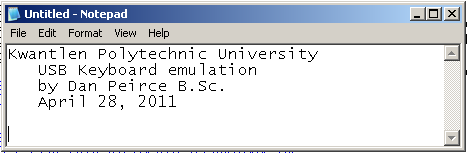

link to Sensor Notes Index
See USB Documents
USB CDC Documents
Feb. 16, 2012
New development boards are available from Microchip. MCP2210 Evaluation Kit and the MCP2210 Breakout Module.
This may be preferable to the Low Pin Count USB Development Kit since it would not require direct use of the Microchip USB framework which has a very significant learning curve and takes up program memory. The Low Pin Count USB Development Kit would probably be most useful to us if we were giving a course specifically on USB.
I will post notes at MCP2210_USBtoSPI.html
June 20, 2011
Start Of Frame
Over the weekend I decided to read chapter 2 of USB Complete. I don't want to delve into all the details of the Microchip USB framework (at least not at this time) but a read of chapter 2 on Inside USB Transfers is answering some questions regarding the CDC demo project. For example in the CDC demo there is a function related to the USB that gets called periodically at a 1ms rate. In this example there is a counter in that function that counts these calls so that a vairiable will be updated once every 100 ms with the status of the switch on the board. The function is actually generic and exists in many examples regardless of if it is actually doing anything.
The function is called USBCB_SOF_Handler().
At low and full speeds the USB uses 1 ms frames (generated by the host). See figure 2-1 on page 35 of USB Complete. SOF stands for Start Of Frame.
The function USBCB_SOF_Handler() is called by BOOL USER_USB_CALLBACK_EVENT_HANDLER(USB_EVENT event, void *pdata, WORD size) when the event is EVENT_SOF.
That appears that USER_USB_CALLBACK_EVENT_HANDLER is not called directly anyplace in the project. It is called by the alias USB_SOF_HANDLER(). There is a macro in usb_device_local.h:
F:\Microchip Solutions v2010-10-19\Microchip\USB\usb_device_local.h:450: #define USB_SOF_HANDLER(event,pointer,size) USER_USB_CALLBACK_EVENT_HANDLER(event,pointer,size)
The call to USB_SOF_HANDLER() occures in USBDeviceTasks() which is the file USB_device.c.
In summary the USBCB_SOF_Handler() is called at the start of each USB frame which happens once each millisecond (this timing is controlled by the host).
Transfer type
The CDC basic demo results in data being transfered using bulk transfer type. The disadvantage of this type is that there is no reserved bandwith. Data transfer is fast when the USB is not busy but slows down when it is busy. This means if someone is coping a file to a USB flashdrive then other devices using bulk transfer may encounter a slow down in data transfer.
If one were to use a custom HID configuration then Interrupt Transfer would be used and bandwidth would be reserved for the device. For data aquisition and control applications this would be more reliable.
Windows Application Software Language
If the CDC configuration is used one can easily use any one of many languages since com ports (and so virtual com ports) are supported by languages like Perl, Processing and MatLab.
If one is using the custom HID configuration it appears there is not support in all these languages yet.
This is where Labview has a big advantage. It appears that labview has a versatile utility that allows one to access a wide variety of USB configurations.
http://zone.ni.com/devzone/cda/tut/p/id/4478
Well I see some are debating the Labveiw advantage. Some like using the .Net languages (like visual C++ .NET). My guess it all depends on what someone already knows.
http://www.microchip.com/forums/tm.aspx?m=440704&mpage=1&print=true
June 16, 2011
I received the book USB Complete back today. It seemed like a good idea to get it back at this time since in comparing the USB CDC document to the Mirochip usb_descriptors.c file it was really unclear why some of the descriptors were there. The block diagram from http://www.lvr.com/usb_virtual_com_port.htm indicated there were four class specific descriptors needed for the virtual com port application but I was looking for more clairity on this. The USB Complete Figure 7-5 shows the descriptors for communication-device class. This is less general that microchip slide 20 but more general than the usb_virtual_com_port block diagram.
If one were to expand the Function-specific Functional Descriptor block into three blocks (it says 1 or more) then one would start to get a diagram more like the usb_virtual_com_port block diagram.
The question that still remained was some specifics like where are those blocks specifically defined and why. Also, both Microchip and the usb_virtual_com_port required that the interface descriptor include a protocol code for a modem but it was not clear why (no modem will actually be used and the Microchip firmware demo has no support for AT commands)
V25TER, // Protocol code - Common AT commands ("Hayes(TM)")
I have browsed chapter 7 of USB Complete for answers. It looks like there is some info on both questions. Specifically looking for why V25TER when no AT commands are being used I find an answer on pages 197 and 198.
"The modem driver included with Windows 98 SE and later (usbser.sys) is compatible with modems that use the Abstract Control Model. A modem used by applications that use the Windows Telephony Application Programming Interface (TAPI) must have its own INF file."So the answer that starts to emerge here is that some of the specifics of using a virtual COM port in a windows environment stems from the nature of the driver supplied by Microsoft and that Microsoft provides a driver for modems that can be used for a virtual com port even if no modem is actually going to be present.
"Devices other than modems can use the usbser.sys driver as well. To enable host applications to access a device using COM-port functions (a virtual COM port), bInterfaceSubClass must be set to the Abstract Control Model."
CDC vs HID
One reason to use the communication class and a virtual com port it to avoid the need to create a new special purpose diver. Also, packages like LabView, MatLab, Perl, Processing.... typically already have modules that can interface to a virtual com port.
[for futrue reference about virtual COM issues: http://supp.iar.com/Support/?note=15729&from=search+result]
June 10, 2011 (rev. June13, 2011)
On my bus rides I have started comparing the USB descriptor information in the version of usb_descriptors.c (from Microchip) used for the basic CDC demo to infomation from USB Class Definitions for Communications Devices so I could clairify some points in my own mind.
see http://www.usb.org/developers/devclass_docs/
The older version of the USB Class Definitions for Communications Devices document (version 1.1) was available as a PDF and was about 120 pages long. The newer version 1.2 document is only about 30 pages long since some sub-classes were taking out of the main document and put in separate documents. This looks cleaner and less confusing but the on line CDC document is now stuffed in a zip file with the sub class documents. For convenience I'll put the version 1.2 pdf 2010 revised version document here:
CDC120.pdf
I have also seen a 2007 version of the same document.
Other CDC related documents
Reference Title Revision [USB2.0] Universal Serial Bus Specification (also referred to as the USB Specification). 2 [USBCCS1.0] Universal Serial Bus Common Class Specification 1 [USBPSTN1.2] USB CDC Subclass Specification for PSTN Devices 1.2 [USBISDN1.2] USB CDC Subclass Specification for ISDN Devices 1.2 [USBECM1.2] USB CDC Subclass Specification for Ethernet Devices 1.2 [USBNCM1.2] Universal Serial Bus Communications Class Subclass Specifications for Network Control Model Devices 1 [USBATM1.2] USB CDC Subclass Specification for ATM Devices 1.2 [USBWMC1.1] USB CDC Subclass Specification for Wireless Mobile Communications Devices 1.1 [USBEEM1.0] USB CDC Subclass Specification for Ethernet Emulation Devices 1
From Getting_Started_with_MLPCUSB_Solutions_final.pdf side 20
The file that sets up the descriptors supplied from Microchip for the Basic USB CDC demo is usb_descriptors.c.
Slide 20 from microchip is generic for USB in general. They do not provide a more specific conceptual block diagram for the communications class. I found the following image at http://www.lvr.com/usb_virtual_com_port.htm
Microchip does have an Application Note specific to the USB CDC class. see AN1164 USB CDC Class on an Embedded Device
Appendix E in that application note gives a break down of the CDC specific descriptors.
Back to the Current Project -- Basic CDC demo
In usb_descriptors.c two ROM arrays have been defined and initialized with the necessary descriptor information needed by the PC (and windows and the USB drivers on the windows machine) to recognize what type of device has been attached to the USB port.
Device Descriptor
from usb_descriptors.c
from usb_config.h
from usb_function_cdc.h
CDC1.2 pdf
/* Device Descriptor */
ROM USB_DEVICE_DESCRIPTOR device_dsc=
{
0x12, // Size of this descriptor in bytes
USB_DESCRIPTOR_DEVICE, // DEVICE descriptor type
0x0200, // USB Spec Release Number in BCD format
CDC_DEVICE, // Class Code
0x00, // Subclass code
0x00, // Protocol code -No class specific protocol required
USB_EP0_BUFF_SIZE, // Max packet size for EP0, see usb_config.h
0x04D8, // Vendor ID
0x000A, // Product ID: CDC RS-232 Emulation Demo
0x0100, // Device release number in BCD format
0x01, // Manufacturer string index
0x02, // Product string index
0x00, // Device serial number string index
0x01 // Number of possible configurations
};
#define USB_EP0_BUFF_SIZE 8
#define CDC_DEVICE 0x02
table#2p12
table#4p12
table#5p13

Configuration 1 Descriptor
It appears that configuration descriptor, interface descrptors and interface descritors are all kept in this one ROM array configDescriptor1[]
This device has only one configuration.
| Table created June
10, (and revised June 11, 12, 13) 2011 --- still
adding comments and notes to this table. The first two columns of the table origniated from the watch window in MP lab. The third column is from usb_descriptors.c The fourth column is a combination of my own comments and notes taken from the CDC1.2 document. |
|||
| from MPlab watch
wnidow |
each row in this column is from the file usb_descriptors.c |
My comments and notes from CDC 1.2 (pdf) |
|
| byte |
Hex | /* Configuration 1 Descriptor */ | |
| ROM BYTE configDescriptor1[]={ | All of this is just
the definition and initialization of a ROM array. (set
at compile time). |
||
| /* Configuration Descriptor */ | |||
| [0] | 0x09 | 0x09,//sizeof(USB_CFG_DSC), // Size of this descriptor in bytes | [0] to
[8] ---- configuration descriptor |
| [1] | 0x02 | USB_DESCRIPTOR_CONFIGURATION, // CONFIGURATION descriptor type | |
| [2] | 0x43 | 67,0, // Total length of data for this cfg - is 0x43 | > total length of this confiuratoin Descriptor [0] to [66] |
| [3] | 0x00 | ||
| [4] | 0x02 | 2, // Number of interfaces in this cfg | Data Class Interface, Communications Interface Class |
| [5] | 0x01 | 1, // Index value of this configuration | |
| [6] | 0x00 | 0, // Configuration string index | |
| [7] | 0xC0 | _DEFAULT | _SELF, // Attributes, see usb_device.h | |
| [8] | 0x32 | 50, // Max power consumption (2X mA) | 2x50 => 100 mA which is default value |
| /* Interface Descriptor */ | |||
| [9] | 0x09 | 9,//sizeof(USB_INTF_DSC), // Size of this descriptor in bytes | [9] to [17] |
| [10] | 0x04 | USB_DESCRIPTOR_INTERFACE, // INTERFACE descriptor type | |
| [11] | 0x00 | 0, // Interface Number | |
| [12] | 0x00 | 0, // Alternate Setting Number | |
| [13] | 0x01 | 1, // Number of endpoints in this intf | |
| [14] | 0x02 | COMM_INTF, // Class code | 0x02 from usb_function_cdc.h and table#3p12 |
| [15] | 0x02 | ABSTRACT_CONTROL_MODEL, // Subclass code | 0x02 from usb_function_cdc.h and talbe#4p12 |
| [16] | 0x01 | V25TER, // Protocol code - Common AT commands ("Hayes(TM)") | 0x01 from usb_function_cdc.h & table#5p13 AT Commands: V.250 etc note#1. |
| [17] | 0x00 | 0, // Interface string index | |
| /* CDC Class-Specific Descriptors */ | this group seems to be shown in table#15p18 | ||
| [18] | 0x05 | sizeof(USB_CDC_HEADER_FN_DSC), | Size of this descriptor. |
| [19] | 0x24 | CS_INTERFACE, | #define CS_INTERFACE 0x24 from usb_function_cdc.h table#12p17 |
| [20] | 0x00 | DSC_FN_HEADER, | #define DSC_FN_HEADER 0x00 from usb_function_cdc.h table#13p17 |
| [21] | 0x10 | 0x10,0x01, | bcdCDC field > USB Class Definitions for Communications Devices |
| [22] | 0x01 | Specification release number in binary-coded decimal (see table#18) | |
| [23] | 0x04 | sizeof(USB_CDC_ACM_FN_DSC), | |
| [24] | 0x24 | CS_INTERFACE, | #define CS_INTERFACE 0x24 from usb_function_cdc.h table#12p17 |
| [25] | 0x02 | DSC_FN_ACM, | #define DSC_FN_ACM 0x02 - Abstract Control Management table#13p17 |
| [26] | 0x02 | USB_CDC_ACM_FN_DSC_VAL, | |
| [27] | 0x05 | sizeof(USB_CDC_UNION_FN_DSC), | |
| [28] | 0x24 | CS_INTERFACE, | |
| [29] | 0x06 | DSC_FN_UNION, | |
| [30] | 0x00 | CDC_COMM_INTF_ID, | |
| [31] | 0x01 | CDC_DATA_INTF_ID, | |
| [32] | 0x05 | sizeof(USB_CDC_CALL_MGT_FN_DSC), | |
| [33] | 0x24 | CS_INTERFACE, | |
| [34] | 0x01 | DSC_FN_CALL_MGT, | |
| [35] | 0x00 | 0x00, | |
| [36] | 0x01 | CDC_DATA_INTF_ID, | |
| /* Endpoint Descriptor */ | |||
| //sizeof(USB_EP_DSC),DSC_EP,_EP02_IN,_INT,CDC_INT_EP_SIZE,0x02, | |||
| [37] | 0x07 | 0x07,/*sizeof(USB_EP_DSC)*/ | |
| [38] | 0x05 | USB_DESCRIPTOR_ENDPOINT, //Endpoint Descriptor | |
| [39] | 0x81 | _EP01_IN, //EndpointAddress | |
| [40] | 0x03 | _INTERRUPT, //Attributes | |
| [41] | 0x08 | 0x08,0x00, //size | |
| [42] | 0x00 | ||
| [43] | 0x02 | 0x02, //Interval | |
| /* Interface Descriptor */ | |||
| [44] | 0x09 | 9,//sizeof(USB_INTF_DSC), // Size of this descriptor in bytes | |
| [45] | 0x04 | USB_DESCRIPTOR_INTERFACE, // INTERFACE descriptor type | |
| [46] | 0x01 | 1, // Interface Number | |
| [47] | 0x00 | 0, // Alternate Setting Number | |
| [48] | 0x02 | 2, // Number of endpoints in this intf | |
| [49] | 0x0A | DATA_INTF, // Class code | |
| [50] | 0x00 | 0, // Subclass code | |
| [51] | 0x00 | NO_PROTOCOL, // Protocol code | |
| [52] | 0x00 | 0, // Interface string index | |
| /* Endpoint Descriptor */ | |||
| //sizeof(USB_EP_DSC),DSC_EP,_EP03_OUT,_BULK,CDC_BULK_OUT_EP_SIZE,0x00, | |||
| [53] | 0x07 | 0x07,/*sizeof(USB_EP_DSC)*/ | |
| [54] | 0x05 | USB_DESCRIPTOR_ENDPOINT, //Endpoint Descriptor | |
| [55] | 0x02 | _EP02_OUT, //EndpointAddress | |
| [56] | 0x02 | _BULK, //Attributes | |
| [57] | 0x40 | 0x40,0x00, //size | |
| [58] | 0x00 | ||
| [59] | 0x00 | 0x00, //Interval | |
| /* Endpoint Descriptor */ | |||
| //sizeof(USB_EP_DSC),DSC_EP,_EP03_IN,_BULK,CDC_BULK_IN_EP_SIZE,0x00 | |||
| [60] | 0x07 | 0x07,/*sizeof(USB_EP_DSC)*/ | |
| [61] | 0x05 | USB_DESCRIPTOR_ENDPOINT, //Endpoint Descriptor | |
| [62] | 0x82 | _EP02_IN, //EndpointAddress | |
| [63] | 0x02 | _BULK, //Attributes | |
| [64] | 0x40 | 0x40,0x00, //size | |
| [65] | 0x00 | ||
| [66] | 0x00 | 0x00, //Interval | |
| }; | |||
June 6, 2011
May 23, 2011
I have now tested the CDC demo (lab4) from microchip for use on the LPC USB Development Kit.
As before I had to make some small changes to get this up and running. I will outline those later.
This demo essentially makes the Development kit a USB to RS232 adaptor at 19200 bps. It is tested with two hyperterminal windows.
What I am actually interested in doing with this is simply dropping the RS232 side and sending information directly to the USB buffer from firmware that makes use of either the ADC or timers or both.
The instructions in the User Guide assume one is using Windows XP. I'll have to look into getting the right driver for windows 7.
CDC Basic Demo
I was thinking that I wanted a make changes to the demo that would essentially drop the RS232 part of the link and just use the serial USB in conjuction to input to the PIC. I discovered that the USB framwork files come with other examples. There is a basic demo that sends a message to through the USB if a button on the board is pressed. It also echo's characters it recieves but adds one to them so that an A comes back as a B and so on. The exception is carrage return and linefeed which come back as sent. I compiled the project and tryied it with hyperterminal.
Using the CDC basic Demo with Processing
I thought it would be nice to try this demo with a Processing Language GUI. I looked in the examples and found one that could be used without changes (exept setting the write com port and baud rate -- 19200).
When the button is pressed the inner square changes color.
There are other processing examples that could be used but the PIC program will require some changes to match the expectations of the exising processing serial demo's. At least some of them were set up to be used with a Wiring / Arduino demo but they should work just as well with the PIC board (once the firmware is adjusted).
May 10, 2011(rev. May 24, 2011)
Microchip has a page that includes protocol analyzers (added May 24, 2011)
third party Protocol Analyzers
I come across this (looking for something else) http://www.beyondlogic.org/usbnutshell/usb1.shtml
and http://www.beyondlogic.org/usb/otghost.htm (on the go host)
USB packet snifter ("sniffer") I had a look at http://sourceforge.net/projects/usbsnoop/
http://benoit.papillault.free.fr/usbsnoop/
This is software only and is free and beta. Not much in the way of documentation.
Another possibility see http://www.usb-monitor.com/usb-monitor-pro.html
free 15 day trial ($199 after trial period). Includes filtering. May be a better bet than usbsnoop.
found another possiblity. USBTrace : Software-only USB Protocol Analyzer Like the screenshoot of this one. http://www.sysnucleus.com/
They provide more information than the others see http://www.sysnucleus.com/usbtrace_advantage.html
http://www.sysnucleus.com/USBTrace%20Datasheet.pdf
Also http://www.hhdsoftware.com/usb-monitor
Someone else has made a list here http://www.freedownloadmanager.org/downloads/usb_protocol_analyzer_software/
http://comvcon.blogspot.com/2008/11/list-of-usb-protocol-analyzers.html
An actual hardware USB Protocol Analyzer at $475 (plus free software).
May 9, 2011
I was hoping we would be able to use some of these USB projects with our new Android 2.2 ViewPad 7. It turns out that the ViewPad 7 is a USB device and not a USB host. This means we will not be able to attach a USB webcam (telescope camera) or USB keyboard to the ViewPad7. If we want to connect exteral sensors it would have to be through the bluetooth interface. see ../android/index.html#viewpad7
Some talk about hacking the USB so that the Android could be a host (or adding the feature). see ../android/index.html#hostmode
May 4, 2011
Jumper position for Microchip examples
(mouse in circle and USB keyboard). This combination allows the board to power up from the USB interface.
J14 on right most pins (this is step 22 shown on page 17 of Low Pin Count USB Development Kit User's Guide).
J12 off the pins (I leave the jumper on just one pin so it won't go missing). (this is step 23 shown on page 17 of Low Pin Count USB Development Kit User's Guide).
For programming the PICkit2 goes on this header.
April 29, 2011 (rev. May 1, 2011)
The original demo project from Microchip was focused on how the interface is set up. By moving Keyboard() into a different file than the USB code I was hoping to move the level of abstraction to focus on the keyboard operations and put the USB HID aspects of the project "under the hood". This was intended to expedite creating new projects. I think a few more simple changes could make this distinction more complete. I think I can do this primarily by creating some function like macros.
main() was moved to the new file to emphasize the cooperative multitasking nature of the project. It is because of this cooperative multitasking that a state machine for the keyboard is really needed. There are different ways to implement state machines in C. As an program is given more features the switch statement method becomes cumbersome. For this reason I perfer use a variable that is a function pointer.
Advantages of the function pointer method of creating state machines
The function pointer concept is really quite simple and one does not need to worry about dereferencing the way one does when using standard variable pointers so you don't need to remember the meaning of different "funny characters" that go in front of the variables. Well, the exception is in the function pointer variable definition which has a funny syntax.
- The code for each state exists in an independent function with a name that is descriptive of what that function does. This is much better than just using numbers.
- Even in the switch statement method if the code gets long it becomes necessary to create functions for what happens in each state (or the switch statement ends up running on for pages).
- One can use an enum with meaningful names rather than just giving the states numbers but then one has to keep the enum list of names and a bunch of names for the state functions and this gets difficult to maintain as the program gets longer. With the function pointer method the name of the functions themselves are used to change states. There is no need for two lists of names. This make this method quite eloquent.
Simple Changes in Kwantlen Project
keyboard01.h
keyboard_main_kwantlen01.c
Using State Functions
The state machine itself is less cluttered if one uses state functions.
void Keyboard(void)
{
//State machine
switch (state)
{
case 0:
start_wait();
break;
case 3:
type_message();
break;
case 4: // case 4 sends a key-up message
key_up();
break;
case 5:
// does nothing at all (all done!)
break;
default:
state = 0;
break;
}
}
The number designations really don't add anything to the state machine. They can be eliminated by using a function pointer.
Function Pointer State Machine
The function pointer version of Keyboard() is shorter still!
void Keyboard(void)
{
state(); // the function actually called depends on the contents
// of the function pointer state!
}
keyboard_main_Kwantlen02.c
Revised State Transition Diagram
I have written a new firmware program that emulates a keyboard sort of like a USB HID keyboard "hello world". This differs significantly from what we have done with the Surrey Campus photogate timer boxes. In that case we used a sparkfun board that allowed the USB port to emulate a serial com port. In this case the USB development Kit is emulating a keyboard (it can alternatively be made to emulate a serial port, or a mouse...).
One first goes to a PC and opens a program like notepad.exe and then attaches the Low Pin Count USB Development Kit board to the PC via a USB cable. The firmware program waits for the PC to enumerate the board. The firmware program then sends a message to the PC as shown below:
The next step is to get the program to display the ADC reading from the potentiometer (emulated sensor) and/or an actual sensor.
see bitmaps and scan codes
Code for this firmware program
This table is for bitmaps of Modifier keys
Bit
Key
0
LEFT CTRL
1
LEFT SHIFT
2
LEFT ALT
3
LEFT GUI
4
RIGHT CTRL
5
RIGHT SHIFT
6
RIGHT ALT
7
RIGHT GUI
This table is for The Keyboard Input Report
Byte
Description
0
Modifier Keys
1
Reserved
2
Keycode 1
3
Keycode 2
4
Keycode 3
5
Keycode 4
6
Keycode 5
7
Keycode 6
April 27, 2011
I have taken the new keyboard01.c and divided it into three files.
keyboard.h
USB_keyboard.c
keyboard_main_state_machine.c
I expect this new version of the project will be easier to follow and make changes to. Changes can be made mostly in keyboard_main_state_machine.c.
Also, the delay which makes up the 0 state of the state machine has been make 100 times shorter. This means that the pot can now be turned very quickly and none of the letters in the output will be skipped. By moving quickly in one fluid motion it is also possible to avoid any back tracking during the movement. This is a substantial improvement and essentially results in a faster sample rate. The original comment in the code about the delay being needed to allow time to charge the capacitor was wrong (there is no way that the capacitor would require that much time to charge).
Files in the project:
[FILE_INFO]
file_000=usb_descriptors.c
file_001=usb_device.c
file_002=usb_function_hid.c
file_003=USB_Keyboard.c
file_004=keyboard_main_state_machine.c
file_005=Compiler.h
file_006=GenericTypeDefs.h
file_007=HardwareProfile.h
file_008=usb.h
file_009=usb_ch9.h
file_010=usb_common.h
file_011=usb_config.h
file_012=usb_device.h
file_013=usb_function_hid.h
file_014=usb_hal.h
file_015=keyboard.h
April 26, 2011
If at some time it is decided to have the students in some course work on labs based on those in the Low Pin Count USB Development Kit User Guide From Microchip the code in the keyboard.c source file could be greatly simplified to make it easier to follow. This file contains a lot of conditionally included directives and c code so that the same file could be used with any one of a number of different Microchip demonstration boards and compilers. For example there are about 6 different blocks of #pragma config directives but only one of these will actually be used in a given build! For example the #pragma config('s) for the Low Pin Count USB Development Kit look like the following:
#elif defined(LOW_PIN_COUNT_USB_DEVELOPMENT_KIT)
#pragma config CPUDIV = NOCLKDIV
#pragma config USBDIV = OFF
#pragma config FOSC = HS
#pragma config PLLEN = ON
#pragma config FCMEN = OFF
#pragma config IESO = OFF
#pragma config PWRTEN = OFF
#pragma config BOREN = OFF
#pragma config BORV = 30
#pragma config WDTEN = OFF
#pragma config WDTPS = 32768
#pragma config MCLRE = OFF
#pragma config HFOFST = OFF
#pragma config STVREN = ON
#pragma config LVP = OFF
#pragma config XINST = OFF
#pragma config BBSIZ = OFF
#pragma config CP0 = OFF
#pragma config CP1 = OFF
#pragma config CPB = OFF
#pragma config WRT0 = OFF
#pragma config WRT1 = OFF
#pragma config WRTB = OFF
#pragma config WRTC = OFF
#pragma config EBTR0 = OFF
#pragma config EBTR1 = OFF
#pragma config EBTRB = OFF
There is also a long section of vector remapping that is not relavent since we are not intending to use a bootloader! We can safely remove this section.
/** VECTOR REMAPPING ***********************************************/
The top of main() could also be simplified from
#if defined(__18CXX)
void main(void)
#else
int main(void)
#endif
{
// //This can be used for user entry into the bootloader
// #if defined(__C30__)
// mInitSwitch2();
// if(sw2 == 0)
// {
// EnterBootloader();
// }
// #endif
to the more typical
void main(void)
{ ...
That is at least the way we start our main function when using the C18 compiler. Reducing 14 lines down to just two lines does make a difference in readability!
void main(void)
{
InitializeSystem();
while(1)
{
// Check bus status and service USB.
USBDeviceTasks(); // Using polling, must call
// this function periodically. This function will take care
// of processing and responding to SETUP transactions
// (such as during the enumeration process when you first
// plug in). USB hosts require that USB devices should accept
// and process SETUP packets in a timely fashion. Therefore,
// when using polling, this function should be called
// frequently (such as once about every 100 microseconds) at any
// time that a SETUP packet might reasonably be expected to
// be sent by the host to your device. In most cases, the
// USBDeviceTasks() function does not take very long to
// execute (~50 instruction cycles) before it returns.
// Application-specific tasks.
// Application related code may be added here, or in the ProcessIO() function.
ProcessIO();
}//end while
}//end main
I did not make changes outlined above when I worked through this exersize but it is done now. posted simplified file. Note that I only made changes up to the end of main(). I think it would be a good idea to divide up this file to put custom parts into a new file apart from the microchip supplied parts.
ProcessIO() is a simple function
void ProcessIO(void)
{
//Blink the LEDs according to the USB device status
BlinkUSBStatus();
// User Application USB tasks
if((USBDeviceState < CONFIGURED_STATE)||(USBSuspendControl==1)) return;
Keyboard();
//Call the function that behaves like a keyboard
}//end ProcessIO
The function Keyboard() is implemented as a state machine so that there will be no blocking code and all the USB related functions have a chance to execute when needed in a timely fashion. Details of the Keyboard() function can be seen in the April 25, 2011 note entry.
Comment on where to go from here
The keyboard state machine is quite simple and illustrates how the user code can be integrated into the USB framework code. This example illustrates that one could interface a device to a PC with a HID keyboard interface. In this case one does not need to write any software for the PC at all. We simply used Notepad.exe and the existing Microsoft USB keyboard drivers. Rather than just sending a letter to represent the position of a pot one might want to send the actual ADC value. This could be done in Notepad or possibly directly in MS Excel.
Error USB_INTERRUPT
In the process of simplifying Keyboard.c I found that in the version of the files I had downloaded from the internet USB_POLLING had not been defined. I verified this to be the case by looking at the Disassembly Listing.
To be consistent with the descriptions in the user guide USB_POLLING must be defined and the definition of USB_INTERRUPT must be commented out. With the original files this project seems to work either way! To be using polling one must edit usb_config.h so that USB_POLLING is defined.
April 25, 2011 (rev. April 26, 2011)(revised April 28, 2011)
Worked through the third lab on HID keyboard and have made a modification that makes it work more like I would have expected.
As with the first two demo's changes to some files must be made so that usb.h is always included before usb_device.h.
To test the original keyboard demo I opened notpad.exe and then plugged in the LPC USB Demo board to the USB. With the original version of keyboard.c the character output would change as expected as the potentiometer knob was slowly rotated. There was seemingly an anomaly if the rotation of the knob was stopped. After a delay the letter would start to repeat quickly. If the pot was slowly turned this long delay did not occur but a string of characters of the alphabet were displayed. The long delay followed by the repeat of the character was not caused by the PIC program but within the operating system. In general keyboards used with windows operating systems send one character when a key is pressed and another character when it is released. With the USB keyboard a code is sent for the pressing of the key. The code for the release could come next as a 0x00 or it could come as a new code for a different key with the code for the old key absent. Windows watches both for the key press and the key release. If no release comes within a predefined amount of time it is assumed that the user is holding the key down and wants it repeated till released. The timing for this is completely controlled within windows and the control panel.
I added a state 4 to the keyboard state machine. This extra state would send a key up code (0x00) as soon as the USB interface was ready. This "fixed" the behaviour so the example worked the way I expected without repeating keys.
As it now exists it is possible to turn the pot too quickly so that some letters are missed in the sequence.
The following state transition diagram is taken from page 23 of Low Pin Count USB Development Kit User's Guide.
code for the altered state machine
void Keyboard(void)
{
static unsigned char state = 0; //declare a state variable for the keyboard state machine
static unsigned long delaycounter = 0;
static unsigned char HIDoutput; //will store an altered version of the ADRESH result
static unsigned char HIDoutputLast=5; // added april 25, 2011
//State machine
switch (state)
{
//ADD STATE MACHINE CODE HERE
//delay to allow the hold capacitor on the ADC to charge
case 0:
delaycounter++;
if(delaycounter>9000u)
{
delaycounter = 0;
state = 1;
}
break;
case 1:
ADCON0bits.GO_DONE = 1; //Start an ADC conversion
state = 2;
break;
case 2:
if(ADCON0bits.GO_DONE == 0) //Check if conversion is
//completed
{
state = 3;
}
break;
case 3:
HIDoutput = ADRESH>>3;//shift the result in ADRESH
//left by three
if(HIDoutput<=4u) HIDoutput = 4;
if(HIDoutput>=29u) HIDoutput = 29;
//Can the SIE transmit?
if((HIDTxHandleBusy(lastTransmission) == 0) )
{
if( HIDoutput != HIDoutputLast )
{
//Load the HID buffer
hid_report_in[0] = 0;
hid_report_in[1] = 0;
hid_report_in[2] = HIDoutput;
hid_report_in[3] = 0;
hid_report_in[4] = 0;
hid_report_in[5] = 0;
hid_report_in[6] = 0;
hid_report_in[7] = 0;
//Send the 8 byte packet over USB to the host.
lastTransmission = HIDTxPacket(HID_EP,(BYTE*)hid_report_in, 0x08);
HIDoutputLast = HIDoutput;
}
state = 4;
}
break;
case 4:
if((HIDTxHandleBusy(lastTransmission) == 0) )
{
{
HIDoutput = 0;
//Load the HID buffer
hid_report_in[0] = 0;
hid_report_in[1] = 0;
hid_report_in[2] = HIDoutput;
hid_report_in[3] = 0;
hid_report_in[4] = 0;
hid_report_in[5] = 0;
hid_report_in[6] = 0;
hid_report_in[7] = 0;
//Send the 8 byte packet over USB to the host.
lastTransmission = HIDTxPacket(HID_EP,(BYTE*)hid_report_in, 0x08);
}
state = 0;
}
break;
default: state = 0;
break;
}
}//end keyboard()
see http://www.usb.org/developers/devclass_docs/HID1_11.pdf page 56, 60, 62, 63 (revised April 28, 2011)
Page 56 shows "bitmap for the modifiers" ; this is needed for shift, control and alt
Page 60 shows "keyboard input report (8 bytes)" structure.
The usage tables (scan codes) are actually in a different document.
http://www.usb.org/developers/devclass_docs/Hut1_12.pdf see pages 53 to 59.
April 23, 2011
Have worked through the first two Microchip labs for the Low Pin Count USB Development Kit.
HID mouse
enumeration lab1
HID mouse Mouse In a Circle Demo
Lab 2
HID keyboard
Lab 3
CDC Serial Emulator
Lab 4
enumeration
The intent of this example lab is to get one familar with some asplects of the files used. The PC will detect the pressense of a HID mouse and load microsoft drivers. The program does not really do anything more.
Mouse In a Circle Demo
In this case the program actually does something. One can see LED's on the board change flash sequence as the board is recognized by the PC. Once enumeration is complete the LED's flash alternately. The mouse pointer on the monitor moves very fast in a circle (really just looks like multiple pointers in a circle pattern that rotates). If the actual mouse is moved the pointer circle will move. There is a button on the board. If pressed the mouse pointer goes back to normal. If pressed again the mouse moves in a circle again.For both demo's (one and two) I used files downloaded from the internet.
I did not follow the suggested folder structure for the lab files as I wanted them on a flash-drive. Some of the instructions seemed to relate to older versions of the IDE. For example one does not need to worry about the linker file with the current version of the IDE.
- Downloaded and installed the Microchip Full-Speed USB Firmware Framework.
Available free at: http://www.microchip.com/stellent/idcplg?IdcService=SS_GET_PAGE&nodeId=2651¶m=en534494- Actual lab files from page at:
http://www.microchip.com/stellent/idcplg?IdcService=SS_GET_PAGE&nodeId=1406&dDocName=en536385
I was a little confused by the fact the directions both said to copy a large number of header files to the project folder but also wanted to add the original folder in the search path (turns out it is not necessary to do both -- note added May 20, 2011).
No comments were made about optimizations.
Errors
For both labs 1 and 2 the build could not be completed without making a changes to #include file directives. It turns out that usb.h must be included before usb_device.h. (this reqires changes to two files in lab 1 and 2 files in lab 2).
See http://www.microchip.com/forums/tm.aspx?m=460370#include "usb_device.h"
(scroll down to RE: Syntax error of USB_DEVICE.h - Tuesday, December 08, 2009 3:42 AM ( #6 ) )
#include "./USB/usb.h" // must have this line before usb_device.h
// http://www.microchip.com/forums/tm.aspx?m=460370
#include "usb_device.h"
April 21, 2011
Files for download from Microchip related to the Low Pin Count USB Development Kit can be found athttp://www.microchip.com/stellent/idcplg?IdcService=SS_GET_PAGE&nodeId=1406&dDocName=en536385
Those files include Zip files for "Project Labs" and "Lab Folders".
4 Labs: Enumeration, HID Mouse, HID Keyboard, CDC Serial Emulator
The kit we purchased was obtained from Digikey (part number DM164127-ND -- $42.18). There is another version that comes with a PICkit3 but it is more expensive at about $72.
Another kit related and of interest is the DM180021 starter kit from Microchip . It does not focus on setting up the USB but it does demonstrate a wider variety of configurations:
USB HID MOUSE DEMO, USB HID JOYSTICK DEMO, USB HID CUSTOM DEVICE DEMO, USB CDC DEMO, USB MSD CARD READER DEMO (Mass Storage Device). Also, the web page now also features three applications from contest winners:
April 20, 2011 (rev. May 24, 2011)
I had 2 copies of Getting_Started_with_MLPCUSB_Solutions_final.pdf and Low Pin Count USB Development Kit User's Guide printed through eprint. (I thought Mike may want a copy of each).
The LPC USB DK User Guide suggests reading the Getting started document first (It's about 90 pages but many of the pages are slides (power point?) ). I got around to reading these on my Tuesday Ferry trip to Vancouver Island. I read the getting started pdf in printed form as suggested in 2.2 Prerequisites (see March 5 below) and discovered that
to complete the projects in the guide more documents are required!
Microchip USB Device Firmware Framework Users Guide (18 pages)
http://ww1.microchip.com/downloads/en/DeviceDoc/51679b.pdf
Microchip Free USB Software http://www.microchip.com/stellent/idcplg?IdcService=SS_GET_PAGE&nodeId=2651¶m=en534494
PIC18F13K50/14K50 data sheet (414 pages)
http://ww1.microchip.com/downloads/en/devicedoc/41350c.pdf
USB Revision 2.0 Specification
(the zip file at the first link actually contains 29 documents
-- an original document from 2000 and revisions and additions
-- the main document usb_20.pdf is 650 pages)
http://www.usb.org/developers/docs/usb_20_021411.zip
HID Usage Tables (168 pages)
http://www.usb.org/developers/devclass_docs/Hut1_12.pdf
USB HID Descriptor Tool
http://www.usb.org/developers/hidpage/dt2_4.zip
Universal Serial Bus Class Definitions for Communications Devices
Fortunately the Microchip USB Device Firmware Framework greatly simplifies the implementation of USB projects! Or so they claim (I am inclined to believe it).
As I see it (at this time at least) Microchip has taken an approach much like I did with sumovore.c and sumovore.h in 2011. That is to provide a predefined set of functions that do common low level interaction with the machine. In the case of the USB Framwork the framework takes care of the details of the USB protocol so that the programmer can concentrate on the application.
"...the user defined source code is called from the ProcessIO() function in the <application>.c file."
from page 19 of Low Pin count USB Development Kit User's Guide
"The main point the user should take away from this lab is this: since the USB FrameworkCooperative Multitasking is a concept I have been talking about in the past see ../apsc1299/real_time_code.html
is a multitasking environment, no blocking code should be used. Therefore, as
shown in this lab, state machines will become the norm in many applications."
from page 23 of Low Pin count USB Development Kit User's Guide
The multitasking environment is also meantioned in the getting started document on slide 67
There is no explination of either cooperative multitasking or state machines in the microchip documents I have read so far. I did a search to see if they have applications notes on these subject. So far this is all I have found from them:
"All applications based on the Microchip Stack must be
written in a cooperative multitasking manner.
Cooperative multitasking architecture consists of a
number of tasks executing in sequence. A cooperative
task would quickly perform its required operation and
return so that the next task would be able to execute.
Because of this requirement, a task that needs to wait
for some external input, or needs to perform a long
operation, should be broken down into multiple
subtasks using a state machine approach. Further
discussion of cooperative multitasking and state
machine programming is beyond the scope of this
document. You should refer to software engineering
literature for more detail."
that was from page 12 of
http://ww1.microchip.com/downloads/en/AppNotes/00965a.pdf
There is an older application note that covers these concepts in the context of a real time operating system but that is more complex than basic cooperative multitasking. Only older PIC16CXXX devices are meantioned in that application note probably because it was written back in 1997.
Some useful background on concepts of multitasking and sequential states are given in the document http://www.me.berkeley.edu/~dma/controls/mechsoft.pdf
Perhaps for a primer I could suggest PDF file pages 12 (printed page numbered 6), 13, 15, 16, 19 - 21 (pdf 21 is printed page 15)Also, see
March 5, 2011 (rev. March 6, 2011)
Microchip has a web page about the Low Pin Count USB Development Kit at this link.It has about 94 pages of slides giving an intro to the USB and the development kit.
- One of the documents that comes on the CD with the kit Getting_Started_with_MLPCUSB_Solutions_final.pdf .
2.2 PREREQUISITES
These labs assume that the user:
- Has completed the self-directed course "Getting Started with Microchip's LowPin Count USB Solutions" provided on the accompanying CD.
- Is familiar with the MPLAB IDE and C18 compiler.
- Has some programming experience using the C language.
- Is familiar with Microchip's PIC18F family of microcontrollers.
- more to come...
Another development tool that may be of interest is MCP6V01 Thermocouple Auto-Zeroed Reference Design
see http://ww1.microchip.com/downloads/en/DeviceDoc/51738b.pdf
March 6, 2011
Depending on the application USB 2.0 can operate at different speeds.
{covered on page 7 of "getting started" document)...page 40 Voltages
- low speed -- designed for Human Input Devices (HID)
- examples -- keyboard, mouse, POS (point of sale) terminal and PICkit2
- full speed (clocked at 12MB/sec -- maximum throughput is around 1MB/sec)
- examples -- cameras, thumb drives, data loggers, external disk drives.
- High speed -- not supported by this development kit (clocked at 480MB/second )
- competes with fire wire ; used for high volume data like video
Serial Interface Engine (SIE).
"This dedicated hardware component carries out low-level functions such as time critical communication portions of the USB protocol."